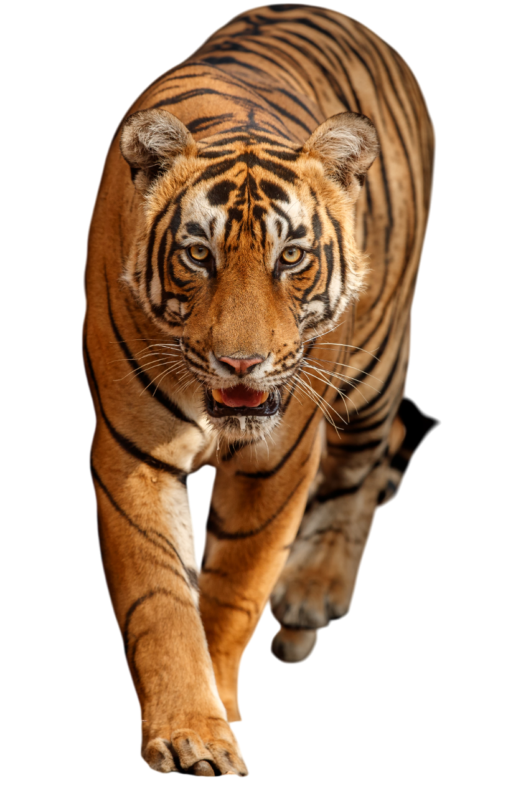
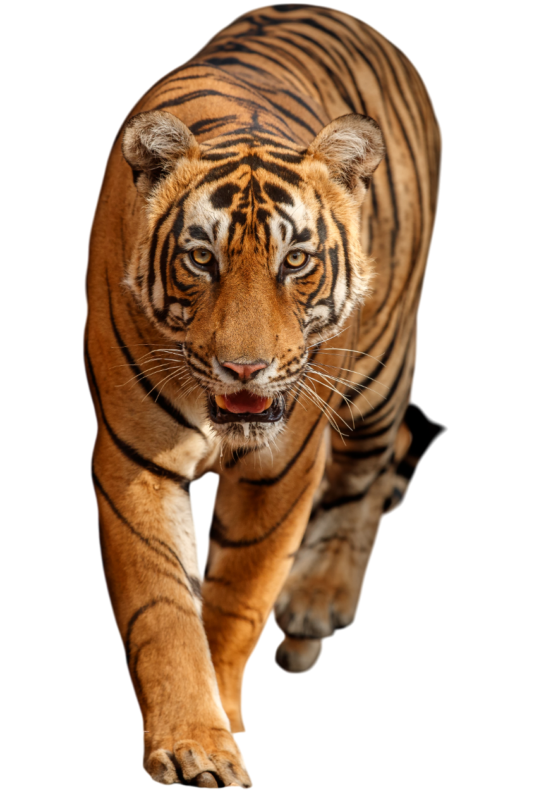

The Jungle
Life in The Jungle
Animal life in the jungle is rich, diverse, and forms a complex
ecosystem where various species coexist and depend on one another for
survival. Jungles, often referring to dense tropical rainforests and
thick forests, are home to a vast array of animals, including mammals,
birds, reptiles, amphibians, and countless insects. Predators like
tigers, leopards, and jaguars roam the forest floor, hunting
herbivores such as deer, wild boars, and monkeys. The trees are alive
with activity, hosting creatures like sloths, birds, snakes, and
tree-dwelling insects. Jungles also provide ideal habitats for
colorful birds like parrots and hornbills, as well as various species
of frogs, many of which are known for their vibrant colors and
distinctive calls.
The jungle ecosystem is intricately balanced, with each species
playing a vital role. Herbivores help control vegetation growth,
predators keep prey populations in check, and decomposers like fungi
and insects recycle nutrients back into the soil. The dense foliage
and layered structure of jungles—ranging from the canopy to the forest
floor—create numerous microhabitats, allowing different species to
thrive. These forests also support a remarkable diversity of plant
life, providing food and shelter for animals. Despite their abundance,
jungles face threats from deforestation, poaching, and climate change,
making conservation efforts crucial to preserving the incredible
biodiversity they harbor.
Deers
Deer in India are diverse and play a vital role in the country's rich
biodiversity. Several species inhabit Indian forests, grasslands, and
wetlands, with some of the most common being the chital (spotted
deer), sambar deer, barasingha (swamp deer), and the Indian muntjac
(barking deer). The chital, with its reddish-brown coat dotted with
white spots, is the most widely seen, often found in herds grazing in
forest clearings. The sambar deer, India’s largest deer species, has a
dark brown coat and large, rugged antlers, and is known for being a
primary prey of the Bengal tiger. Barasingha, distinguished by its
impressive antlers with multiple tines, thrives in swampy grasslands,
while the smaller muntjac is noted for its barking-like calls used to
alert others of danger.
Deer hold ecological and cultural significance in India. They are a
crucial part of the food chain, serving as prey for top predators like
tigers and leopards, which helps maintain ecosystem balance.
Culturally, deer are featured in Indian mythology and are often
associated with gentleness and grace. Conservation efforts, including
protected areas and national parks like Ranthambore, Kanha, and
Kaziranga, have been established to safeguard deer populations.
Despite these measures, habitat loss and poaching remain threats,
emphasizing the importance of continued protection to ensure the
survival of these graceful creatures.
Peacock
The Indian Peacock (Pavo cristatus), also known as the common peafowl,
is the national bird of India and is renowned for its vibrant plumage
and spectacular courtship displays. The male peacock is famous for its
iridescent blue-green feathers and a long, colorful train adorned with
eye-shaped patterns that it fans out to attract females. In contrast,
the female, called a peahen, has more subdued brownish feathers,
helping her blend into the surroundings while nesting. Indian peacocks
are native to the Indian subcontinent and are commonly found in
forests, grasslands, and near human settlements, where they feed on
seeds, insects, small reptiles, and fruits.
Indian peacocks play a significant role in Indian culture and
mythology, symbolizing beauty, grace, and pride. They are known for
their loud calls, especially during the monsoon season when they are
most active in mating rituals. Despite their dazzling appearance,
peacocks are capable of short bursts of flight, usually to escape
predators or roost in trees at night. Although they are protected
under Indian law, habitat loss and hunting for their feathers pose
threats in some areas. However, their adaptability and cultural
reverence help ensure their survival in many regions of India.
Crocodiles
Crocodiles are large, carnivorous reptiles that belong to the family
Crocodylidae. They are found in tropical regions of Africa, Asia, the
Americas, and Australia, typically inhabiting freshwater habitats like
rivers, lakes, wetlands, and sometimes brackish waters. Known for
their powerful jaws, sharp teeth, and strong tails, crocodiles are
apex predators, feeding on fish, birds, mammals, and occasionally
larger prey. They have a tough, scaly skin that provides protection
and helps regulate their body temperature. Despite their bulky
appearance, crocodiles are excellent swimmers and can move
surprisingly fast on land over short distances.
Crocodiles are ancient creatures that have existed for over 200
million years, surviving major evolutionary changes. They play a
crucial role in their ecosystems by maintaining healthy fish
populations and preventing the spread of disease through scavenging.
Crocodiles communicate using vocalizations, body movements, and even
chemical signals. Females are protective mothers, building nests and
guarding their eggs until they hatch. Although crocodiles are
dangerous to humans if provoked, many species face threats from
habitat destruction, pollution, and illegal hunting, leading to
conservation efforts to protect them.